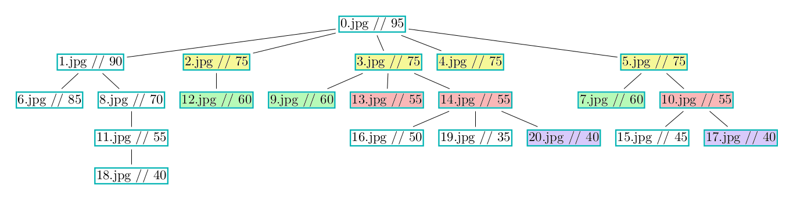
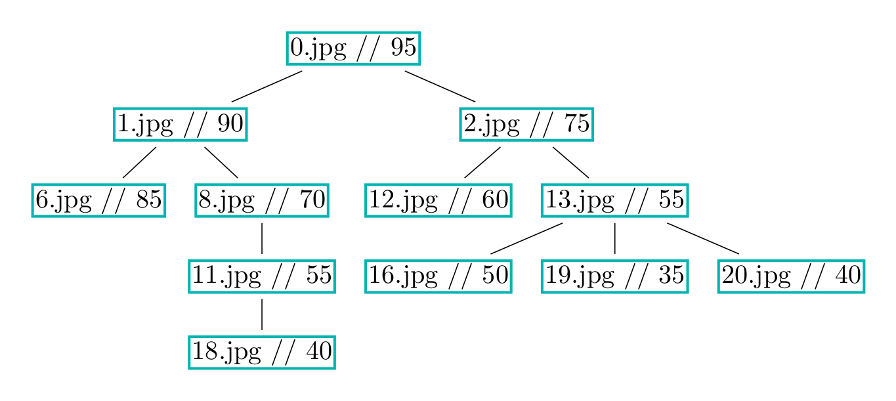

semaine6
1 Création des données de test
Nous avons décidé de nous restreidre au cas le plus simple, c'est à dire que l'image issue d'une recompression a un facteur de qualité strictement inférieur à celui de son parent. Les facteurs de qualité sont tous des multiples de 5, on ne descendra pas en dessous de Qf = 30, l'image originale peut prendre toutes les valeurs ≥ 30.
Ces contraintes réduisent grandement l'espace des combinaisons possibles, et on peut se retrouver dans le cas suivant :

où les noeuds de la même couleur représentent des images identiques et le nombre à droite du nom représente le facteur de qualité.
Si on considère que la compression JPEG est une fonction au sens mathématique du terme, c'est à dire que la même entrée donne toujours la même sortie, les images ayant les noeuds de la même couleurs sont identiques au pixel près, et donc interchangeables. Dans ce cas il n'est plus vraiment intéressant, ni pertinent de tenter de reconstruire l'arbre. Savoir qui est le parent de qui alors inutile puisque les images peuvent être interchangées.
Dans ce cas nous n'allons pas tenter de reconstruire l'arbre, il sera de toute façon probablement faux si les images sont identifiées par leurs noms, nous allons plutôt tenter de reconstituer l'historique des compressions des images. Cela donnera un arbre simplifié où chaque image n'apparaitra qu'une seule fois, comme l'arbre suivant qui est la version simplifiée de l'arbre précédent :

Pour évaluer ce résultat, il semble plus judicieux de regarder si l'historique de compression est juste plutôt que de regarder si les parents, identifiés par leurs noms, sont corrects.
2 Calcul de parenté
Dans un premier temps, nous n'utilisons pas de données issues de compressions JPEG, nous utilisons des vecteurs générés aléatoirement.
- création du vecteur
- 1000 valeurs entre 0 et 500
- création de l'historique des quantifications
- Quand cela doit être le parent
- h1: 2-5 Q toujours décroissants
- h2: 1-4 valeurs de h1 (h2 est le parent de h1 - h2 est un sous-ensemble de h1)
- Quand cela ne doit pas être le parent
- h1: 2-5 Q toujours décroissants
- h2: 2-5 Q toujours décroissants
- Quand cela doit être le parent
- quantification et quantification inverse du vecteur avec h1 et h2
Le test de négation de parenté se fait de la manière suivante :
- Soient deux distributions D1 et D2
- On quantifie D1 et D2 avec min(Q1, Q2)
- On quantifie ensuite D2 avec Qf = 100
- On regarde ensuite si l'un est un sous ensemble de l'autre
C'est une méthode naive, mais cela donne de bons résultats avec des vecteurs générés aléatoirement, 75% de prédictions correctes avec 5% de faux positifs et 15% de faux négatifs.
Cette méthode part du principe que si deux distributions ont été quantifiées avec des Q différents, les valeurs manquantes ne seront pas les mêmes. Le marqueur prouvant qu'une distribution n'est pas le parent d'une autre est la présence de valeurs dans une et pas dans l'autre. Cette méthode marche bien sur des données aléatoires, mais va-t'elle fonctionner sur des données issues de compressions JPEG ? Les coefficients DCT ne sont pas exactement des multiples de Q à cause des différents changement de domaine qu'ils ont subis, ils se concentrent autour des multiples de Q, il faudra donc surement les traiter au préalable.
Même si cette méthode fonctionne très bien avec des données aléatoires, elle donne de très mauvais résultats avec des données réelles. Cela vient probablement du fait que les coefficients DCT ne sont pas exactement des multiples de Qf à cause des différents changement de domaines et troncages et arrondis que cela comporte. Les valeurs ne sont donc pas exactement sur les multiples, mais réparties autour, ce qui se répèrcute à chaque recompression et décale complètement les valeurs.